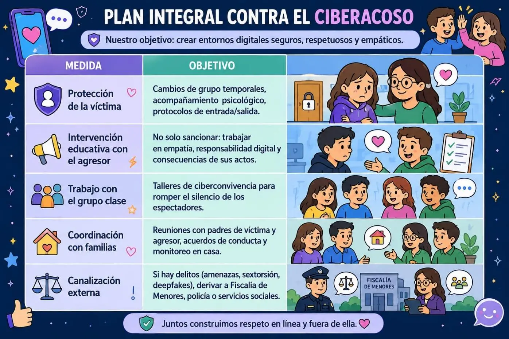
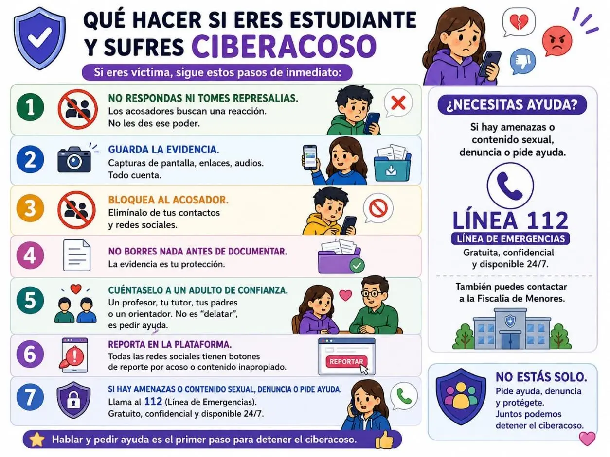
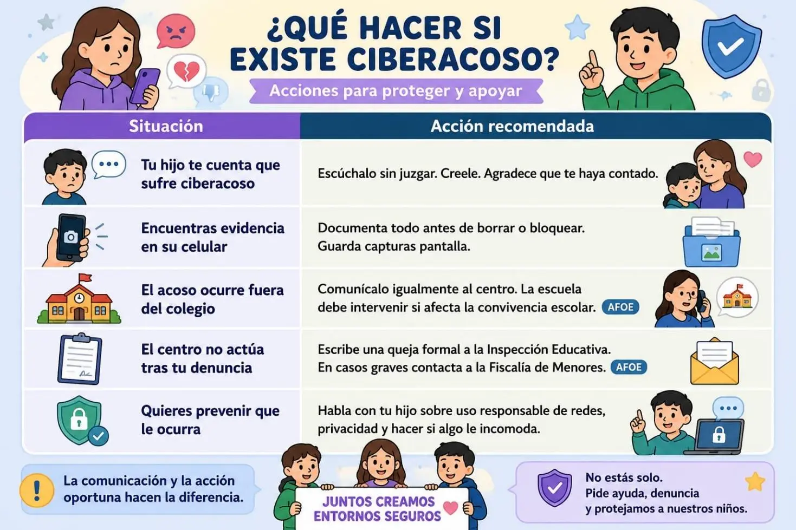
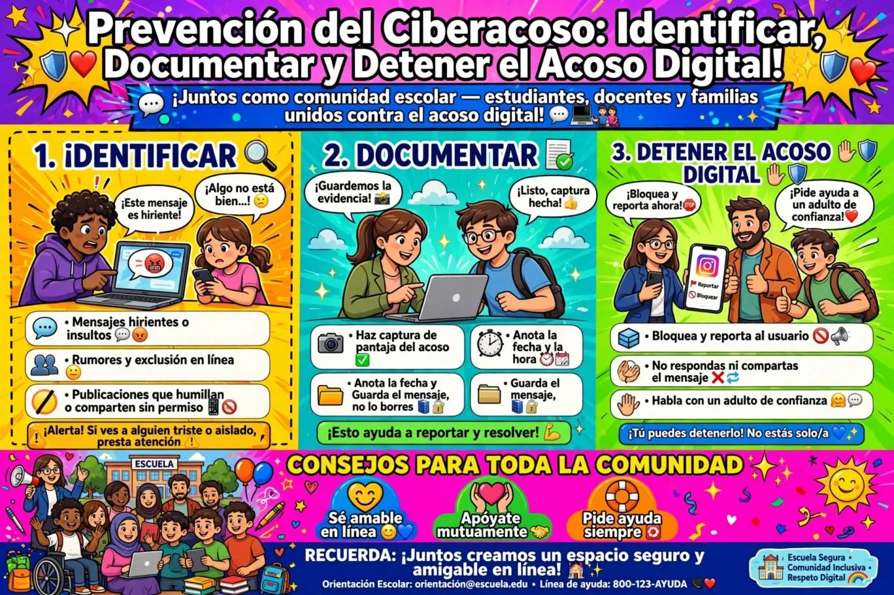

Prevención del Ciberacoso (Cyberbullying): Protocolo para la Comunidad Educativa
¿Qué es el ciberacoso y en qué se diferencia del acoso tradicional?
El ciberacoso es cuando alguien usa el celular, las redes sociales o internet para hacerle daño a otra persona. Puede ser enviar mensajes de odio, inventar rumores, colgar fotos o videos sin permiso, o crear perfiles falsos para avergonzar a alguien. Lo peligroso es que en internet todo se comparte muy rápido, llega a mucha gente y casi nunca se borra del todo.
Además, quien acosa se puede esconder detrás de una pantalla y sentirse protegido para ser más cruel.
Este tipo de acoso deja consecuencias reales: la persona afectada puede sentir mucho miedo, tristeza o vergüenza, y le cuesta relacionarse con otros. No es tan fácil como "apagar el celular" para olvidarlo, porque hoy en día todos necesitamos estar conectados para estudiar, trabajar o hablar con la familia. Por eso el ciberacoso es una forma grave de violencia que usa la tecnología para lastimar, controlar o humillar a alguien.
Cómo identificar el ciberacoso: señales de alerta temprana
El ciberacoso no siempre se denuncia directamente. Muchas víctimas guardan silencio por vergüenza, miedo o culpa. Por eso, toda la comunidad educativa —docentes, familias y compañeros— debe estar atenta a estas señales:
En el comportamiento del estudiante:
- Cambios drásticos en el rendimiento académico o aumento del absentismo.
- Pérdida de objetos personales o material escolar roto frecuentemente.
- Cambios de humor, irritabilidad, tristeza o ansiedad sin causa aparente.
- Síntomas psicosomáticos: dolores de cabeza, barriga o náuseas antes de ir al colegio.
- Aislamiento social repentino: deja de salir con amigos, cierra sus perfiles o, por el contrario, está obsesionado con revisar el celular.
- Dificultad para dormir o pesadillas.
En el entorno digital:
- Recibe mensajes, comentarios o llamadas constantes que le causan angustia.
- Aparecen fotos, videos o rumores sobre él o ella en redes sociales.
- Alguien ha creado un perfil falso suplantando su identidad.
- Recibe amenazas o chantajes digitales (sextorsión, difusión de imágenes íntimas).
- Ha cambiado repetidamente de número de teléfono o de cuenta en redes sociales.
Tipos de ciberacoso que debe conocer la comunidad educativa
| Tipo | Descripción |
|---|---|
| Hostigamiento | Mensajes insultantes, amenazas o burlas repetidas por chat, redes o correo. |
| Difusión de rumores | Propagar información falsa para dañar la reputación de la víctima. |
| Suplantación de identidad | Crear perfiles falsos usando el nombre, fotos o datos de otra persona. |
| Exclusión digital | Dejar fuera intencionalmente a alguien de grupos, chats o actividades en línea. |
| Ciberstalking | Acecho persistente y obsesivo a través de plataformas digitales. |
| Sexting forzado / Sextorsión | Exigir, compartir o chantajear con imágenes o videos de contenido sexual. |
| Deepfakes e IA generativa | Usar inteligencia artificial para crear videos o audios falsos de la víctima. |
Cómo documentar el ciberacoso: la evidencia digital es clave
Sin pruebas, un caso de ciberacoso se convierte en una palabra contra otra. Documentar bien no solo protege a la víctima, también permite actuar con rapidez y legalidad.
Pasos para recopilar evidencia digital:
-
Capturas de pantalla (screenshots)
- Captura todo: el mensaje, el nombre del perfil, la fecha, la hora y la plataforma.
- En teléfonos: pulsa simultáneamente los botones de encendido + volumen abajo (varía según el modelo).
- En computadoras: usa la herramienta de recortes o Impr Pant y pega en un documento.
-
Guarda los enlaces (URLs)
- Copia la dirección exacta de la publicación, perfil o comentario.
- Los enlaces son rastreables incluso si el agresor borra el contenido después.
-
Registra la secuencia cronológica
- Anota en un documento: fecha, hora, plataforma, tipo de contenido y descripción.
- Ordena todo por orden de ocurrencia para ver el patrón de acoso.
-
Conserva los archivos originales
- No solo captures pantalla: si hay videos, audios o fotos, guárdalos en una carpeta segura.
- Algunas plataformas permiten descargar el historial de chats.
-
Busca testigos digitales
- Identifica si otras personas vieron, compartieron o recibieron el contenido.
- Sus testimonios fortalecen el caso.
-
No borres nada
- Ni la víctima ni los padres deben eliminar mensajes o bloquear perfiles antes de documentar.
- Una vez recopilada la evidencia, sí se recomienda bloquear al acosador para detener el contacto.
Protocolo de actuación escolar: paso a paso
Este protocolo está basado en las mejores prácticas de los marcos nacionales e internacionales de actuación ante el ciberacoso.
Paso 1: Detección y comunicación inmediata
- Cualquier miembro de la comunidad educativa (docente, estudiante, familia, personal de limpieza) que sospeche un caso tiene la obligación de comunicarlo por escrito a la dirección del centro.
- Se debe registrar en un informe de incidencia para dejar constancia documental.
Paso 2: Valoración inicial y protección de la víctima
- Antes de confirmar el caso, el centro debe valorar la situación y adoptar medidas inmediatas para proteger al alumno afectado.
- Acompañamiento emocional, evitar el contacto no supervisado con posibles agresores y comunicar la situación al equipo directivo y de orientación.
Paso 3: Notificación en las primeras 24 horas
- Informar a las familias afectadas (tanto de la víctima como del agresor, por separado).
- Activar la coordinación interna del centro.
- Dejar constancia escrita de cada actuación.
Paso 4: Investigación y recogida de información
- Formar un equipo instructor (coordinador, orientador, tutor).
- Entrevistar a las partes por separado: nunca hagas un careo entre víctima y agresor en esta fase.
- Recoger evidencias digitales (capturas, enlaces, testimonios).
- Valorar el nivel de riesgo y si el daño continúa.
Paso 5: Plan de intervención (máximo 10 días)

Paso 6: Medidas disciplinarias y restaurativas
- El objetivo no es solo castigar, sino reeducar y reparar el daño.
- Prácticas restaurativas: que el agresor comprenda el impacto de sus actos y participe en la reparación.
- Medidas disciplinarias proporcionales, siempre dentro del reglamento de convivencia del centro.
Paso 7: Seguimiento continuo (mínimo 6 meses)
- Monitorear el bienestar de la víctima: ¿se siente segura? ¿Ha mejorado su rendimiento? ¿Ha recuperado sus amistades?
- Vigilar que el agresor no reincida.
- Revisar el clima del aula y del centro.
Paso 8: Cierre documentado
- El caso se cierra cuando se verifica que la situación ha cesado y la víctima está recuperada.
- Se archiva toda la documentación de forma confidencial, cumpliendo con la protección de datos del menor.
¿Qué hacer si eres estudiante y sufres ciberacoso?

¿Qué hacer si eres padre o madre?

Prevención: construir una cultura de ciberconvivencia
Un protocolo guardado en un cajón no protege a nadie. La prevención del ciberacoso requiere acción constante:
En el aula:
- Talleres anuales sobre ciudadanía digital, empatía online y huella digital.
- Simulaciones de casos: "¿Qué harías si ves un mensaje de acoso en un grupo de clase?"
- Formación del profesorado en detección temprana y manejo de evidencias digitales.
En la familia:
- Conversaciones regulares sobre lo que hacen en línea, sin interrogar.
- Acuerdos claros sobre uso de dispositivos: dónde cargan el celular (mejor fuera del dormitorio), horarios de pantalla, y qué hacer si reciben algo incómodo.
- Conocer las redes sociales que usan sus hijos y las herramientas de privacidad de cada una.
En el centro:
- Designar un referente de ciberconvivencia (profesor o orientador especializado).
- Crear un buzón anónimo digital para denuncias.
- Celebrar el Día Internacional contra el Acoso Escolar (2 de mayo) con actividades de concienciación.
